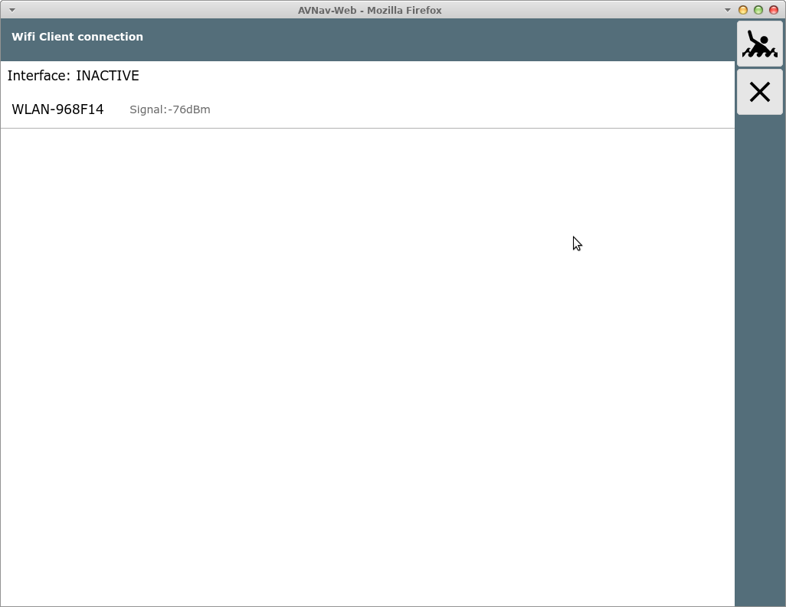
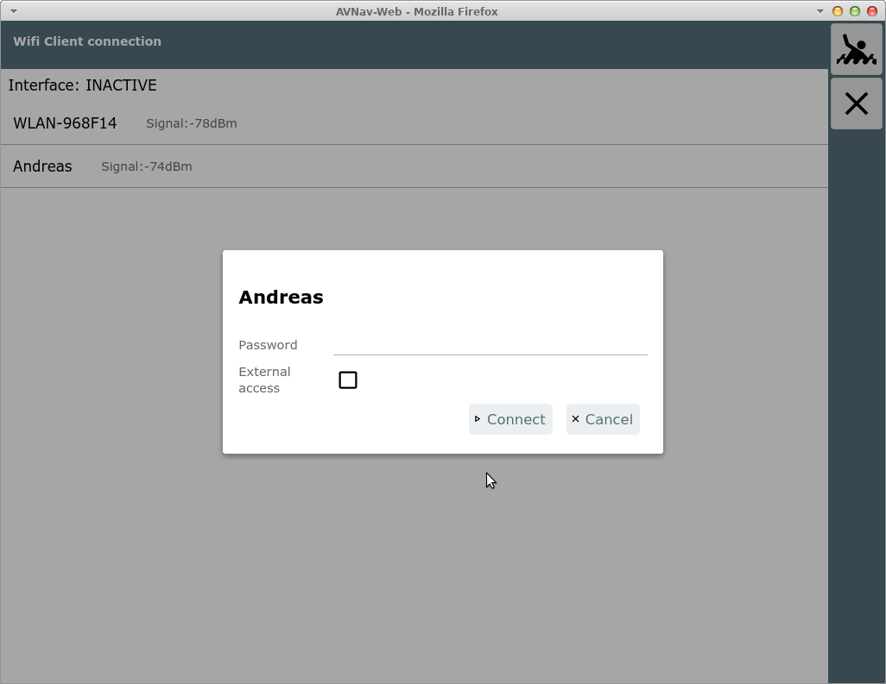
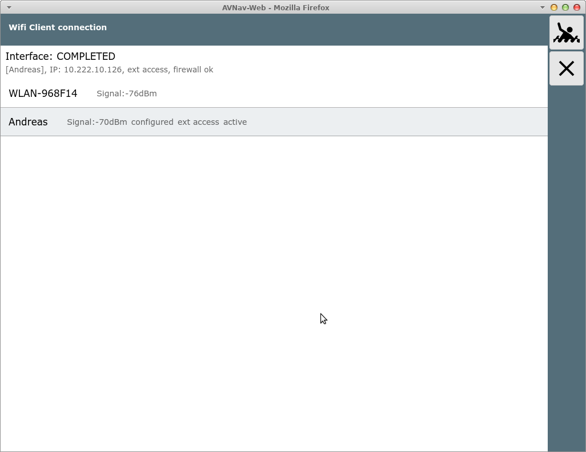
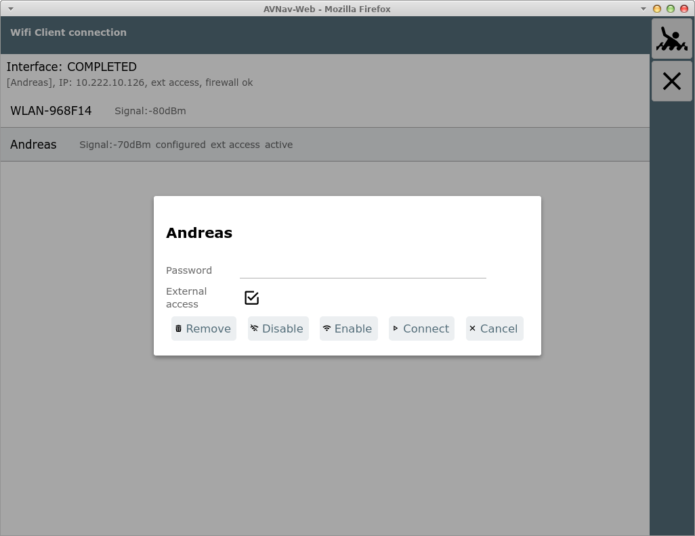

- nicht auf Android -
Von der Statusseite kommt man mit dem
Button  zu
dieser Seite.
zu
dieser Seite.

Diese Seite wird nur angezeigt, wenn das Wifi Client Handling konfiguriert ist (als default an) und ein WLAN-Adapter in der richtigen USB-Buchse eingesteckt wurde.

Im Bild gezeigt hier ein Raspberry Pi 3. Bei den neueren mit USB 3.0 (blaue Buchsen) muss er in der blauen Buchse auf der Leiterplatten-Seite stecken.
Auf Systemebene muss ein WLAN "wlan-av1" angezeigt werden. In der Konfiguration (avnav_server.xml) muss eine Eintrag der Form
vorhanden sein.
Auf der Seite werden alle in Reichweite befindlichen oder konfigurierten WLANs angezeigt.
Durch Klick auf ein angezeigtes WLAN kann die Verbindung hergestellt werden.

Falls ein Zugriff von aussen auf den Raspberry erfolgen soll, kann hier "External Access" eingeschaltet werden.
Achtung: Das sollte nicht in öffentlichen WLANs aktiviert werden, da
AvNav keinen besonderen Schutz bietet und sonst jeder im gleichen WLAN
ungehindert zugreifen kann.
Es kann aber z.B. genutzt werden, wenn man einen LTE Router nutzt und
seine Geräte direkt mit diesem verbunden sein sollen.
Wenn die Verbindung hergestellt wurde, wird das entsprechend angezeigt, das verbundene Netzwerk ist grau hinterlegt.

Während des Verbindungsaufbaus werden bei "Interface" Zustandsinformationen angezeigt.
Falls man das WLAN trennen möchte, kann man durch erneuten Klick auf das Netzwerk dieses trennen, deaktivieren oder auch komplett aus der Konfiguration entfernen.

Die WLAN Informationen werden in der Datei /etc/wpa_supplicant/wpa_supplicant.conf gespeichert.